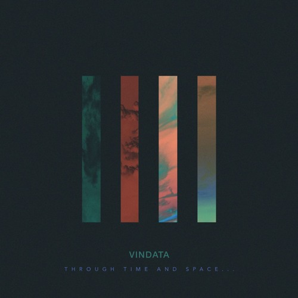

Vindata
Vindata has sought out on a mission to expand how we define dance music. Their all-embracing electronic sound seems to balance rugged Hip Hop beats, with deep R&B passions, and Indie-Pop sensibilities. After notable underground success with their last EP "…For One To Follow" , Branden and Jared released a new EP titled "Through Time And Space…" , another piece of their discography puzzle depicting the human experience. This time around, they've crafted a 6 track journey through different perceptions of different realities. The final result is a cohesive body of energetic yet lush textures, polyrhythmic percussion, and soulful vocals.
In 2014, their single "All I Really Need" gained the interest of reputable tastemaker Skrillex, who brought them on his Fall Tour. The duo also played noteworthy festivals at TomorrowWorld, Hard Summer, Red Rocks, and Firefly Festival. Their music has gained the support of Flosstradamus, Zed's Dead, Skrillex, Sweater Beats, Gladiator, Branchez, Kastle, Arty, and more.